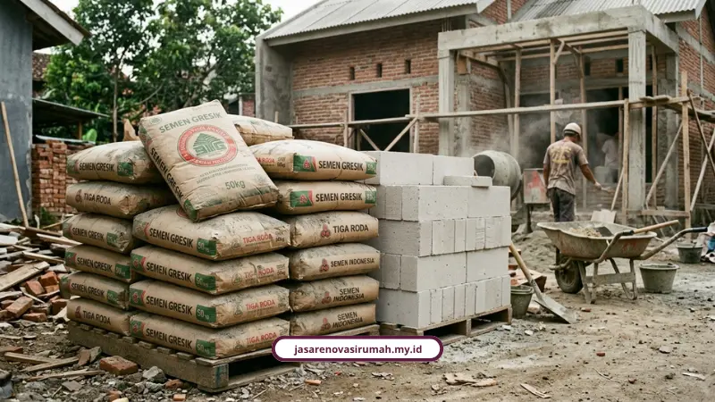
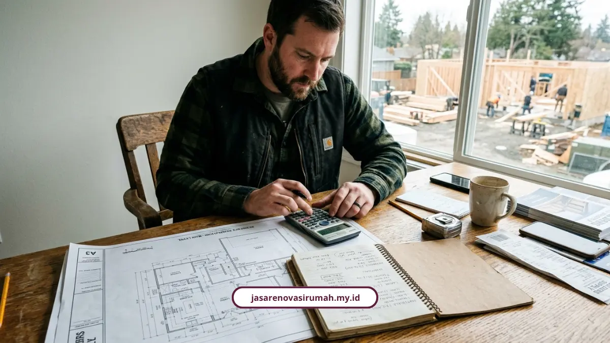

Cara menghitung estimasi biaya renovasi rumah dimulai dari menghitung volume pekerjaan, mengalikan dengan harga satuan material dan upah, lalu menambah dana cadangan 5-15 persen. Ikuti panduan lengkapnya di bawah supaya RAB Anda tidak meleset jauh dari kenyataan lapangan.
Banyak orang Malang mulai renovasi rumah tanpa hitung-hitungan jelas dulu. Hasilnya, di tengah jalan uang habis padahal pekerjaan belum kelar separuh. Ini masalah klasik yang sebenarnya bisa dihindari kalau tahu cara menyusun RAB dari awal.
Ir. Bambang Hartono, ahli konstruksi dari CV. Mutu Guna Bangun, mengingatkan pentingnya ketelitian di tahap ini:
“Perhitungan volume yang akurat adalah kunci RAB yang realistis. Kesalahan kecil di volume bisa berbeda puluhan juta di total biaya.”
Mengapa RAB Renovasi Sering Meleset?
RAB sering meleset karena banyak pemilik rumah fokus pada harga material saja, tanpa menghitung volume pekerjaan dan potensi perubahan spesifikasi di tengah jalan. Padahal, biaya tambahan seperti pipa bocor, pengecatan ulang, dan pemasangan peralatan baru bisa membengkak dengan cepat.
Masalah ini makin sering terjadi saat renovasi rumah dilakukan tanpa denah kerja, tanpa rincian material, dan tanpa pengawasan teknis yang jelas. Itu sebabnya langkah pertama paling penting adalah menghitung volume pekerjaan lebih dulu, lalu menyiapkan dana cadangan.
Rumus Dasar Menghitung Volume Pekerjaan Renovasi
Rumus dasar menghitung volume pekerjaan renovasi berbeda tergantung jenis pekerjaannya, apakah beton, lantai, atau plesteran dinding.
Berikut rumus yang biasa dipakai:
- Pekerjaan beton/pasangan dinding (m³): panjang x lebar x tinggi (atau tebal).
- Pekerjaan lantai/plafon/atap (m²): panjang x lebar.
- Pekerjaan plesteran dinding (m²): panjang x tinggi x 2 sisi.
Contoh perhitungan pasangan bata untuk dinding sepanjang 40 meter, tinggi 3 meter, tebal bata 15 cm:
Volume dinding = 40 m x 3 m x 0,15 m = 18 m³
Angka volume ini yang nanti dikalikan harga satuan material dan upah untuk dapat total biaya per item pekerjaan. Dengan cara ini, Anda bisa membandingkan kebutuhan material dan anggaran lebih akurat.

Berapa Acuan Biaya Renovasi per Meter Persegi di Malang Raya?
Acuan biaya renovasi rumah di Malang Raya tahun 2026 berkisar Rp1.200.000 sampai Rp4.500.000 per meter persegi tergantung skala pekerjaan.
- Renovasi ringan: Rp1.200.000 - Rp1.800.000/m² (cat ulang, ganti keramik, perbaikan plafon jebol).
- Renovasi sedang: Rp2.000.000 - Rp3.200.000/m² (ganti rangka atap baja ringan, rombak layout, kitchen set, renovasi fasad).
- Renovasi berat/total: Rp3.500.000 - Rp4.500.000/m² (tambah lantai 2/dak cor, suntik pondasi cakar ayam, bongkar lebih 70 persen dinding lama).
Kalau Anda sedang menghitung anggaran khusus dapur, gambaran biayanya ada di kisaran Rp8.000.000 sampai Rp18.000.000 untuk meja cor ukuran 3x3 meter lengkap dengan backsplash keramik dan instalasi pipa baru.
Berapa Biaya Jasa Arsitek untuk Menyusun RAB?
Biaya jasa arsitek di Malang berkisar Rp15.000 sampai Rp200.000 per meter persegi tergantung kelengkapan gambar kerja yang diminta.
Ada tiga paket yang umum dipakai:
- Paket basic: Rp25.000/m²: gambar 3D eksterior 1 view, denah, tampak 4 sisi, potongan.
- Paket standard: Rp35.000/m²: detail arsitektur, gambar kerja atap, lantai, plafon, titik lampu, plumbing.
- Paket premium: Rp50.000/m²: detail struktur pondasi, kolom, pembalokan, dan penyusunan RAB lengkap.
Alternatif lain, biaya jasa arsitek juga bisa dihitung sebagai persentase 5-8 persen dari total RAB pembangunan. Jadi, kalau proyek Anda besar, jasa arsitek justru membantu mencegah pembengkakan biaya yang lebih mahal.
Sistem Tukang Mana yang Paling Aman untuk Anggaran?
Sistem borongan penuh (all-in) lebih aman untuk anggaran dibanding tukang harian karena harga sudah dikunci di awal, termasuk material dan pengawasan.
- Tukang harian: upah tukang Rp120.000-150.000/hari, kenek Rp100.000-110.000/hari, mandor sekitar Rp135.000/hari. Cocok perbaikan kecil, tapi risiko membengkak kalau pekerjaan molor.
- Borongan jasa: Rp1.100.000-1.300.000/m², material dibeli sendiri oleh pemilik rumah.
- Borongan penuh (all-in): Rp3.000.000-4.500.000/m², sudah termasuk material, upah, dan pengawasan.
Sistem borongan penuh inilah yang kami terapkan dalam layanan jasa renovasi rumah Malang kami, supaya klien tidak perlu repot urus material sendiri.
Kenapa Harus Sisihkan Dana Cadangan di RAB?
Dana cadangan wajib disisihkan di RAB karena selalu ada risiko biaya tak terduga di lapangan, seperti pipa lapuk atau struktur tersembunyi yang rusak.
Beberapa hal yang perlu diperhitungkan:
- Tambahkan toleransi 5-10 persen pada volume material untuk antisipasi wastage atau kerusakan.
- Siapkan dana cadangan terpisah 5-15 persen, idealnya 10 persen, dari total RAB untuk biaya tak terduga.
Selain itu, harga material juga fluktuatif. Sebagai gambaran, semen 50 kg saat ini di kisaran Rp65.000-105.000/sak, sementara besi beton ulir 12 mm ada di Rp105.000-115.000/batang. Angka ini perlu dicek ulang saat eksekusi karena harga bisa bergeser.
Contoh Cara Hitung RAB Renovasi Sederhana
Untuk rumah dengan renovasi dinding, lantai, dan plafon, Anda bisa menghitung dengan cara berikut:
- Volume pekerjaan dinding: panjang x tinggi x tebal dinding.
- Volume pekerjaan lantai: panjang x lebar.
- Harga satuan: material + upah per m² atau per m³.
- Total item: volume x harga satuan.
- Tambahan: 10 persen cadangan + pajak atau biaya tak terduga bila ada.
Contoh sederhana, jika pekerjaan plesteran dinding 40 m² dengan harga satuan Rp65.000/m², maka totalnya adalah 40 x Rp65.000 = Rp2.600.000. Lalu tambahkan 10 persen cadangan, sehingga total pekerjaan tersebut menjadi sekitar Rp2.860.000.
Dengan cara ini, Anda dapat membuat estimasi yang jauh lebih realistis sebelum memulai renovasi.
Kesimpulan
Menghitung estimasi biaya renovasi rumah sebenarnya bukan hal rumit kalau Anda paham rumus volume dasar dan sudah punya acuan harga per meter persegi. Tapi kalau Anda lebih memilih hasil yang pasti akurat tanpa risiko salah hitung, tim kami siap bantu susun RAB transparan lewat konsultasi gratis.
Hubungi 0889-8964-3555 atau datang ke Jl. Soekarno Hatta No. 45, Malang untuk mulai konsultasi. Kami membantu Anda menghitung kebutuhan material, volume pekerjaan, dan estimasi biaya tanpa menutup kemungkinan perubahan skala saat proyek berjalan.